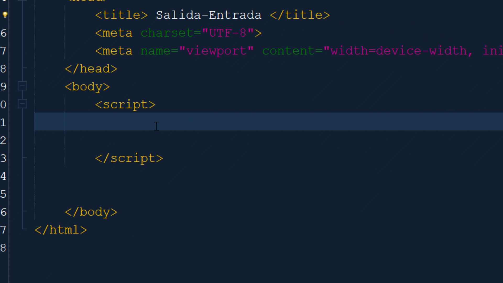
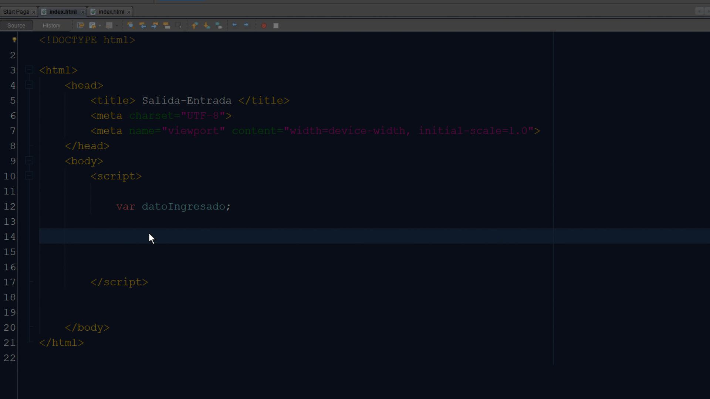
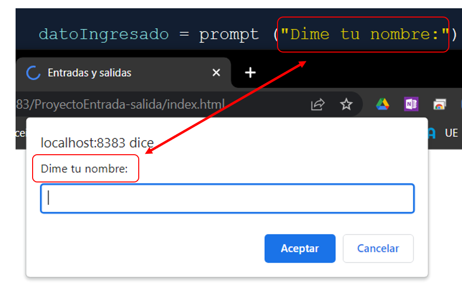
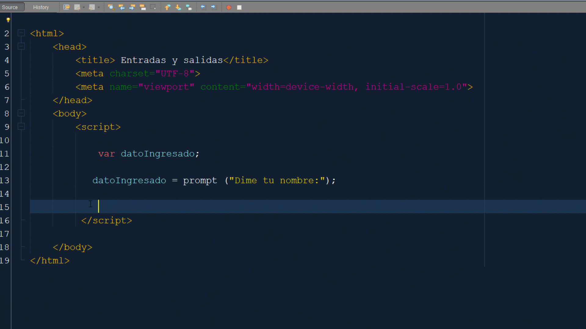
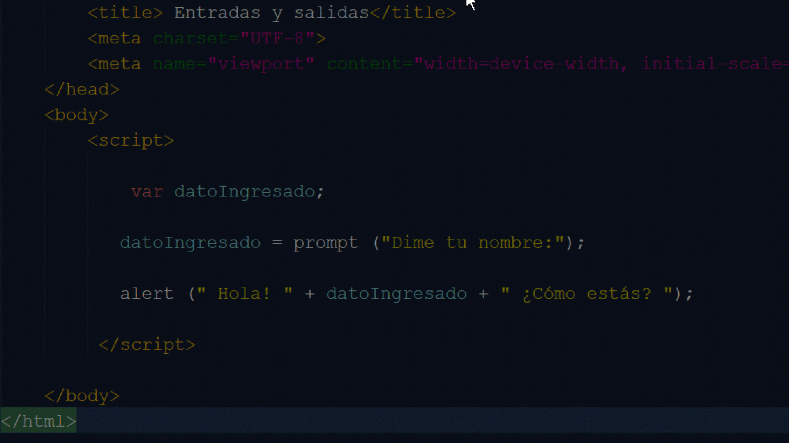

Entrada/Salida
Se debe aclarar que en este caso trabajaremos con la ejecución con el navegador, por este motivo las ejecuciones por consola o terminal no serán tenidas en cuenta.
Todo programa maneja datos, datos de entrada (input) y datos de salida (output). Los datos de entrada habitualmente son ingresados por el usuario a través del teclado, aunque existen otras formas de ingreso de datos a los programas como ser: otros programas (sistemas de base de datos, sistemas de archivos, aplicaciones de servicio, entre otros) o dispositivos llamados periféricos de entrada o sensores (mouse, micrófono, cámara, acelerómetro, brújula, entre otros). En este espacio se trabaja con los datos ingresados por teclado ya sea definidos por el programador o solicitados al usuario.
Con los datos de salida sucede algo similar, el dispositivo por excelencia es el monitor o pantalla, pero existen otros como ser otros programas, periféricos de salida (parlantes, impresoras, entre otros.). En este recurso definimos al monitor como la salida estándar.
Apoyo visual
Dispositivo por defecto para entrada de datos:

Dispositivo por defecto para salida de datos.

Entrada en Javascript
Para pedir datos al usuario (input) utilizamos la sentencia prompt, dicha sentencia permite realizar una lectura del teclado, en otras palabras, al ejecutarse esa línea de código el programa despliega un espacio para que se ingrese información. Cabe mencionar que previamente se debe reservar un espacio de memoria para alojar ese dato. Esto lo podemos hacer definiendo una variable para que se guarde el dato ingresado. Para profundizar en el concepto y manejo de variables, accede a la sección variables.
Ordenemos los pasos:
- Creamos el proyecto.
- Definimos una variable para guardar el dato pedido.
- Pedimos el dato al usuario, asignando el dato ingresado a la variable antes definida.
Crear proyecto nuevo

Definir variable

Pedir dato a usuario y asignar a la variable

Salidas en Javascript
Al pedir el un dato al usuario el programa ya realiza una salida, para explicar esto veremos la imagen en la que se solicita al usuario el ingreso de un dato:

Como se puede notar la frase "Dime tu nombre" es un texto que se muestra al usuario como salida para guiarlo acerca del dato que se espera recibir. Más adelante veremos métodos en los que se pueda comprobar que el dato ingresado sea compatible con el dato pedido, pero eso es algo avanzado aún.
Entonces podemos decir que la solicitud de ingreso de datos ya significa una salida, en efecto es así. Supongamos que ahora queremos emitir un saludo a la persona que ingreso su nombre, y para hacerlo requerimos utilizar el dato ingresado (su nombre). En Javascrip esto lo podemos hacer de dos formas, con una ventana emergente similar a la que despliega el prompt o dentro de la estructura de la página html que contiene el programa.
Veamos ambas formas para desplegar el saludo al usuario utilizando su nombre como parte del saludo.
Salida utilizando alert (Ventana emergente)

Salida utilizando document.write (En la página web)
